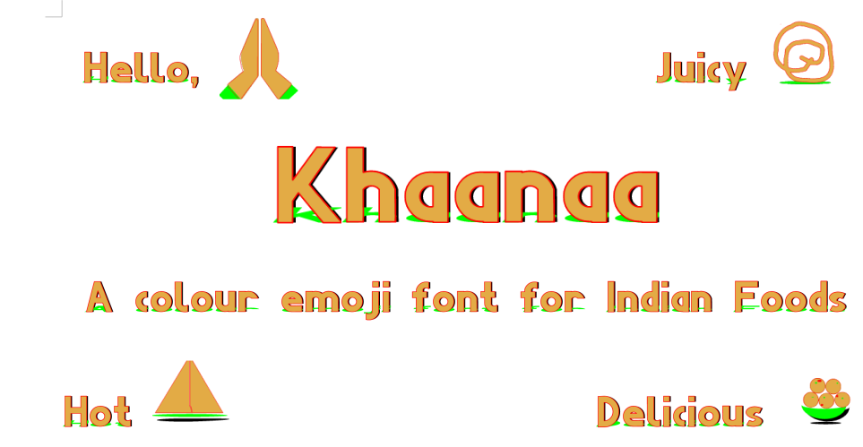

We Indians Love foods. A country where cuisine changes every hundred kilometeres or so, there are some favourites all over.
In this font we will showcase various famous Indian food as multicolour emoji which can be accessed by web typograpghy as well as in Word Processors like Libreoffice Writer by switching on "dlig" discretionalry ligature feature in your web page of word processor.
Hopefully someday these emojis will be included in Unicode standard
(see test file)
View here
This font is created by Dr Anirban Mitra, an amateure Typographer and Free Software Enthusiast.
December 2 2024 - Version 0.001 - One Emoji added
December 10 2024 - Version 0.010 - Ten Emojies added
We plan to include 1000 emojis by the time we reach version 1.000
Latest release of the font can be downloaded from here
This Font Software is licensed under the SIL Open Font License, Version 1.1. This license is available with a FAQ at OpenFontLicense site